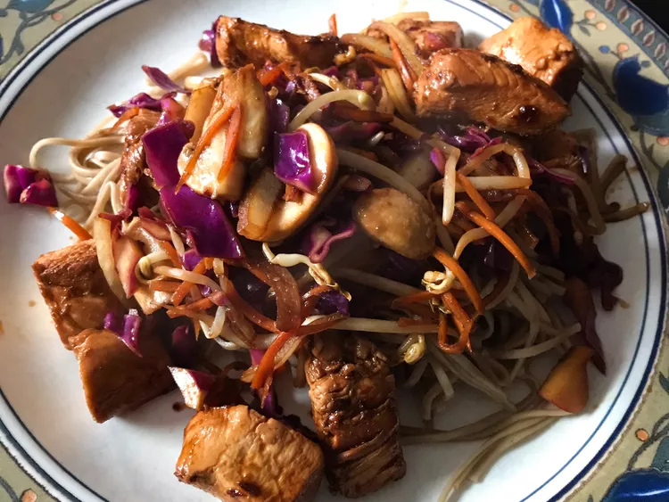

Yakisoba Chicken

Japanese noodles with chicken. YUM!!
This is a simple single skillet recipe that should be done in about 30 min.
These Japanese buckwheat flour noodles can be found in your local Asian food market.
Ingredients
- ½ teaspoon sesame oil
- 1 tablespoon canola oil
- 2 tablespoons chile paste
- 2 cloves garlic, chopped
- 4 skinless, boneless chicken breast halves - cut into 1 inch cubes
- ½ cup soy sauce
- 1 onion, sliced lengthwise into eighths
- 1 onion, sliced lengthwise into eighths
- 2 carrots, coarsely chopped
- 2 carrots, coarsely chopped
Directions
- In a large skillet combine sesame oil, canola oil and chili paste; stir-fry 30 seconds.
- Add garlic and stir fry an additional 30 seconds.
- Add chicken and 1/4 cup of the soy sauce and stir fry until chicken is no longer pink, about 5 minutes.
- Remove mixture from pan, set aside, and keep warm.
- In the emptied pan combine the onion, cabbage, and carrots.
- Stir-fry until cabbage begins to wilt, 2 to 3 minutes.
- Stir in the remaining soy sauce, cooked noodles, and the chicken mixture to pan and mix to blend.
- Serve and enjoy!